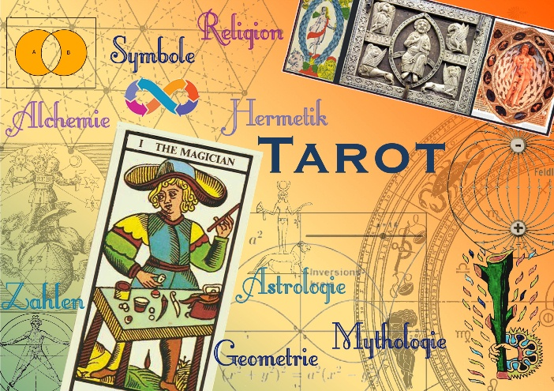
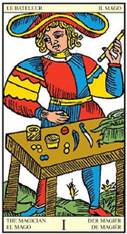

Home
Veranstaltung Wöllstein:
Workshop Tarot - 1
05.10.- 06.10.2019 55597 Wöllstein, Ziegelhüttenstr. 14

Tarot kennen viele nur als eine obskure Wahrsagemethode. Bei nüchterner Betrachtung aber ist das traditionelle Tarotkartendeck ein sehr altes, hochkomplexes symbolisches System, mit dem vielschichtige Themengebiete wie Alchemie, Astrologie, Nummerologie, Geometrie, Mythologie, Psychologie, Symbolkunde u.v.m. miteinander verflochten sind.
Um die weitverzweigte Geschichte dieser Karten ranken sich viele okulte Mythen und esoterische Theorien. Im alten Marseille Deck scheint eine versteckten Geometrie unter den Bildern zu liegen die interessante Rückschlüsse auf kosmische Grundprinzipien und den logischen Aufbau der ganze Konstruktion des Spiels wirft.
Diese erscheint bei näherer Untersuchung wie ein fraktales, multidimensionales Baukastensystem voller verdeckter Zusammenhänge. Innerhalb dieser Betrachtung steht die These im Raum, ob sich Tarot und Wirbelphysik inhaltlich vielleicht sinnvoll verknüpfen lassen.
Der Vortrag arbeitet mit vielen anschauliche Bildern und wird durch eigenes zeichnerisches Ausprobieren und einige erhellende Kartenexperimente ergänzt.
Von den Teilnehmern ist die Bereitschaft des Zulassens von Intuition und das Einlassen auf das innere Aufsteigen von uraltem Wissen gefragt.
Wir beschäftigen uns an diesem Wochenende mit den feinstofflichen Feldebenen von archetypischen Informationen und laden alle Teilnehmer ein, in diese einzutauchen.
Andrè Martini ist Grafiker und Illustrator. Seine berufliche Vorstellung gibt es hier andremartini.net/home/6
Ingrid Schröder übernimmt an diesem Wochenende wieder die Moderation. (http://www.isis-schule.de)
Vorstellung von Ingrid Schröder und Gabi Müller: perlenschnur.org/ueberUns.htm
Programm (als Flyer):
Tarot-1
 |
Tarot-1
mit André Martini
- Eine neue Sicht auf das Marseiller Tarot –
Verschlüsselte geometrische Strukturen verweisen auf ein ganzheitliches Symbolsystem
|
==================================
Freitag, 04.10.2019 (Einlass ab 18:00 Uhr)
==================================
Zum Einchecken, Zelt aufstellen und Ankommen.
ca. 19-21 Uhr gemeinsames Abendessen zum
Kennenlernen (bitte etwas dafür mitbringen, z.B. Salate,
Brötchen, Aufstrich, Getränke) und anschließend
gemütliches Beisammensein zum Gedankenaustausch.
==================================
Samstag, 05.10.2019 (Einlass für neu Eintreffende
ab 8:30 Uhr)
==================================
9:00 – 10:00 Uhr André Martini: Theoretischer Teil 1
10:15 – 11:15 Uhr André Martini: Theoretischer Teil 2
11:30 – 12:30 Uhr André Martini: Theoretischer Teil 3
12:30 – 14:00 Uhr Mittagspause (Restaurants im Ort
vorhanden, ev. Pizzabestelldienst nutzen oder
mitgebrachtes Essen vor Ort einnehmen)
14:00 – 15:00 Uhr André Martini: Theoretischer Teil 4
15:15 – 16:30 Uhr André Martini: Theoretischer Teil 5
17:00 – 18:00 Uhr Praktische Übungen mit den Teilnehmern
18:15 – 19:00 Uhr Diskussion der vorgebrachten Ansätze
und Ergebnisse der praktischen Übungen
19:00 – 20:00 Uhr Abendessen (Restaurants im Ort
vorhanden, ev. Pizzabestelldienst nutzen oder
mitgebrachtes Essen vor Ort einnehmen)
==================================
Sonntag, 06.10.2019 (Einlass ab 8:30 Uhr)
==================================
9:00 – 10:00 Uhr Gabi Müller: Einführung in die Methoden zum Wahrnehmen feinstofflicher Strömungen, Flüsse und „Felder“ (als Teile von natürlichen Wirbelgeschehen)
10:15 – 11:15 Uhr Praktische Übungen Teil 1
11:30 – 12:30 Uhr Praktische Übungen Teil 2
12:30 – 14:00 Uhr Mittagspause (Restaurants im Ort vorhanden, ev. Pizzabestelldienst nutzen oder mitgebrachtes Essen vor Ort einnehmen)
14:00 – 16:00 Uhr Zusammenfassung durch Ingrid Schröder, Beiträge von Teilnehmern und Abschlussdiskussionsrunde
nach 16:00 Uhr Auf Wunsch Verlängerung bis in die Abendstunden
Wir beginnen morgens jeweils pünktlich zu den angegebenen Zeiten. Der Rest ist nur grob geplant und kann sich zeitlich aus dem Fluss des Geschehens heraus ändern.
Da sich für alle von weiter her Anreisenden die Ankunft schon am Freitag Abend empfiehlt,
bieten wir am Freitag Abend eine gemütliche Kennenlern-Runde ohne besonderes Programm an.
Kosten
Die Teilnahme an dieser geschlossenen Veranstaltung*) des Vereins "Perlenschnur" (alle Tage)
erfolgt gegen eine Teilnahmegebühr von 150,-- Euro pro Person.
Getrennte Buchung möglich: Sa 100 €, So 50 €
Bisherige Gastmitglieder und Gruppen erhalten Rabatte.
*) Teilnehmer erhalten mit Anmeldebestätigung eine Gastmitgliedschaft für 3 Monate, diese berechtigt zum Besuch einer Folgeveranstaltung zu einem ermäßigten Preis.
Die Verpflegungskosten trägt jeder Teilnehmer selbst.
Veranstaltungsort
D - 55597 Wöllstein, Ziegelhüttenstr. 14 (Rheinland-Pfalz, nächster Bahnhof in 55543 Bad Kreuznach; öffentliche Busverbindung vom Bahnhof nach Wöllstein bzw. Shuttle-Dienst durch den Verein nach Ende der öffentlichen Busfahrzeiten)
Anmeldung (ohne Zimmerreservierung) formlos per E-Mail an: office@perlenschnur.org
Zimmerbuchung durch den Teilnehmer selbst, z.B. hier
gemeinde-woellstein.de/essen-trinken-schlafen/unterkuenfte oder
boardinghouse-alte-bank.de
Auch hier organisieren wir einen Shuttle-Dienst zu Unterkünften in den Nachbarorten, wenn es keine öffentlichen Busse gibt.
Teilnehmerzahl aus Platzgründen beschränkt.
Bitte daher um rasche Anmeldung. Wir behalten uns eine
Änderung des Programms, auch inhaltlich, vor.
Das Seminar findet vorbehaltlich des Erreichens der
benötigten Mindestteilnehmerzahl statt.
Bei der Anmeldung von Gruppen ab 4 Personen gibt es
einen Gruppenrabatt. Gastmitglieder von Vorveranstaltungen
können ihren Sonder-Rabatt in Anspruch nehmen. Rabatte
sind nicht kombinierbar.
Sozialtarif für Schüler und Studenten ohne Einkommen.
Die Finanzen sollten kein Hinderungsgrund für die Teilnahme
an der Veranstaltung sein, etwa Ratenzahlung oder späteres
Tätigwerden für den Verein. Sprechen Sie uns an.
Wer auf dem Grundstück im selbst mitgebrachten Zelt
übernachten will, muss dies vorher abklären (wegen
beschränkten Platzangebotes).
Wir freuen uns über Ihr Interesse und ganz besonders
auf Ihre Fragen zu den behandelten Themen.
Verein Perlenschnur e.V.
Vorstand: Ingrid Schröder und Dipl.-Phys. Gabi Müller
Sitz: D - 55597 Wöllstein, Ziegelhüttenstr. 14
Telefon Ingrid Schröder 0049 (0) 6703 2965
E-Mail: office@perlenschnur.org
Prinzipieller Hinweis:
Unsere Veranstaltungen zeichnen wir auf Video auf, mit Audioaufzeichnungen.
In den veröffentlichten Videosequenzen achten wir darauf, dass nur die Teilnehmer auch im Bild zu sehen sind, die der Veröffentlichung zugestimmt haben,
allerdings können wir Audiobeiträge der Teilnehmer nicht immer ausblenden.
|
Hier eintragen in den Newsletter von perlenschnur.org und viva-vortex.de
Home
| Termine
| Videos
| Links
| Impressum
| Datenschutz
|